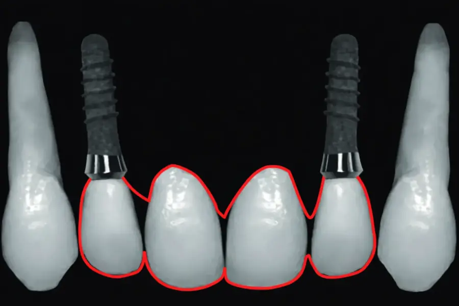

نسخه استخراجشده؛ ترجمه یا تأیید علمی انجام نشده است. وضعیت: captured
چهار دندان قدامی فک بالا از دست رفتهاند و قرار است این ناحیه با دو ایمپلنت بازسازی شود. ایمپلنتها بهتر است در موقعیت دندانهای ۱ قرار بگیرند یا دندانهای ۲؟

منطق طراحی پروتز ایجاب میکند که ایمپلنتها تا حد امکان به یکدیگر نزدیک نباشند. به همین دلیل، در بسیاری از موارد قرار دادن آنها در موقعیت دندانهای ۲ انتخاب منطقیتر و قابلکنترلتری است.
وقتی دو ایمپلنت کنار هم قرار میگیرند، تشکیل پاپی بین آنها ذاتاً دشوار و غیرقابلپیشبینی است. حتی با بهترین جراحی و طراحی پروتزی، رسیدن به پاپیلای ایدهآل بین دو ایمپلنت محدودیت بیولوژیک دارد.
در مقابل، وقتی دو دندان سانترال بهصورت پونتیک طراحی میشوند، کنترل فرم بافت نرم سادهتر است و رسیدن به نتیجهی زیبایی مطلوب قابلپیشبینیتر خواهد بود.
یکی از اصول کلیدی در طراحی درمانهای ایمپلنتی این است که در صورت امکان، از قرار گرفتن ایمپلنتها در مجاورت مستقیم یکدیگر پرهیز شود. قرار دادن ایمپلنتها در موقعیت دندانهای ۲ فاصلهی منطقی بین پایهها ایجاد میکند و طراحی پروتزی سالمتر، قابلکنترلتر و قابلدفاعتری فراهم میکند.
کانتیلیور در این حالت ذاتاً یک طراحی فاجعهآمیز نیست و در بسیاری از شرایط حتی میتواند عملکرد قابل قبولی داشته باشد. اما وقتی امکان انتخاب طرحی وجود دارد که اساساً نیازی به کانتیلیور نداشته باشد، منطقی است که گزینهی کمریسکتر انتخاب شود.
با قرار دادن ایمپلنتها در موقعیت دندانهای ۲:
در اغلب سناریوها، قرار دادن ایمپلنتها در موقعیت دندانهای ۲ انتخابی منطقیتر، قابلدفاعتر و از نظر زیبایی قابلکنترلتر است.
نوع سؤال: ساخت کلمه · 6 خانه
حروف منبع: ی · و · پ · ت · ن · ک